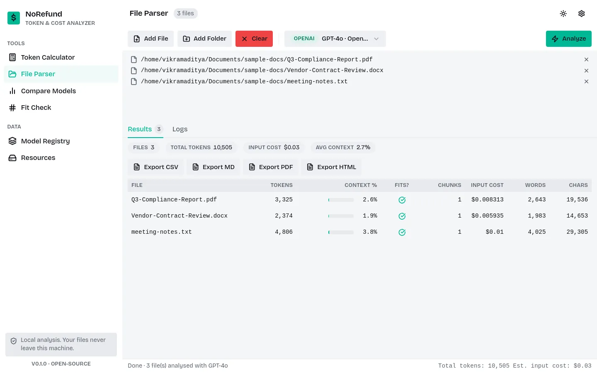
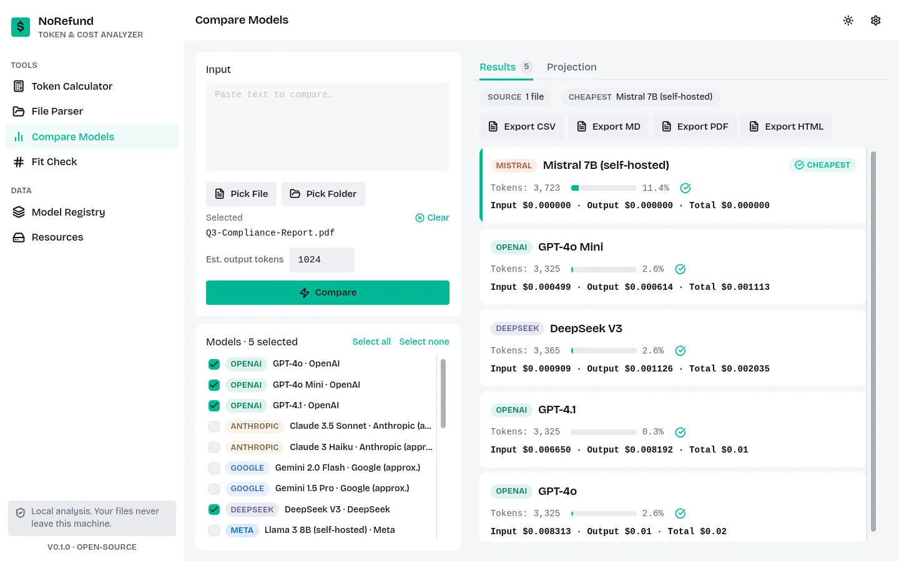
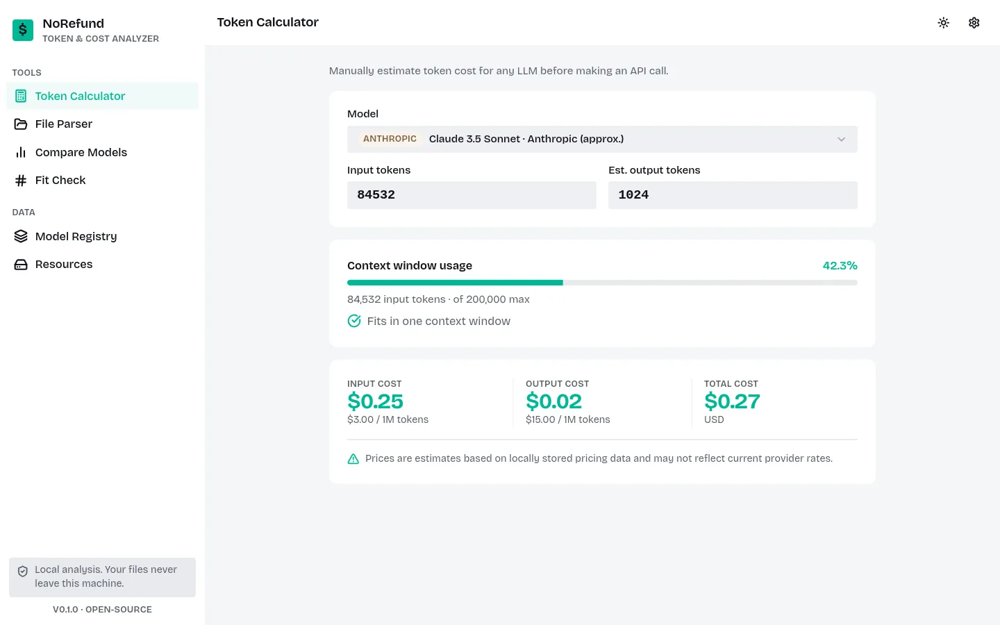
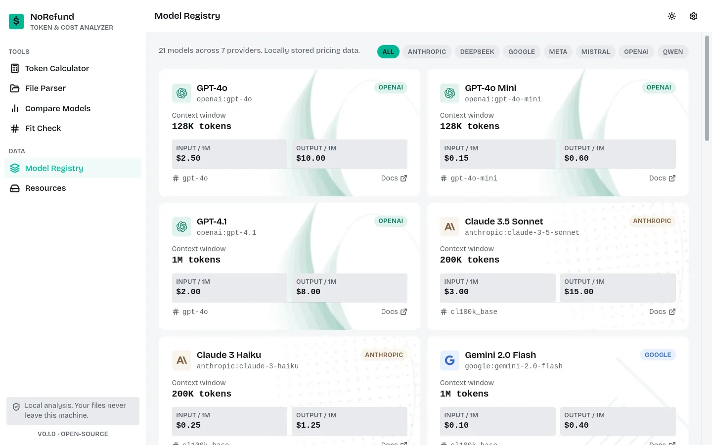
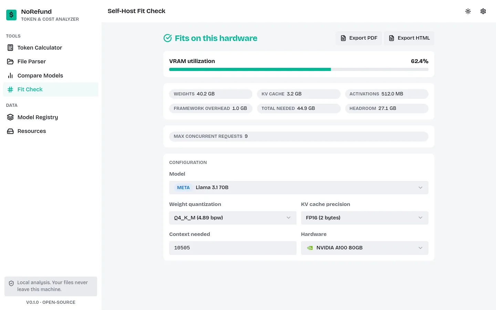

Know before you run.
Count tokens in any document against real tokenizers, check context fit, and see API cost, before you call it. 100% local.

Every other token counter is a website you paste into
That is fine for a short paragraph, but not for a client contract, an internal report, or anything you are not supposed to hand to a random server. Here is where that actually shows up in real work.
- Before building a pipeline that reads documents automatically. Check whether a batch of files will actually fit inside a model's context window before writing a single line of chunking code.
- Before the API bill gets bigger than planned. Estimate the cost of processing a whole folder of reports across a few different models, and pick the cheapest one that still does the job.
- When the documents are confidential. Legal contracts, HR files, financial reports, anything you would not paste into a public website, can still be measured accurately and privately.
- When choosing between providers. Compare OpenAI, Anthropic, Google, and other providers side by side on the exact same document, sorted by price, instead of guessing from memory.
- Before renting or buying a GPU to self-host a model. Fit Check estimates whether an open-weight model's weights, KV cache, and activations actually fit in a given card's VRAM before you commit to hardware.
Real tokenizers, not character-count guesses
We ran this project's own architecture guide (882 words, 7,694 characters) through six real tokenizers to show what "exact" and "approximate" actually mean in practice.
| Model | Tokenizer | Tokens | Exact? |
|---|---|---|---|
| GPT-5.6 Sol (OpenAI) | tiktoken (gpt-4o) | 1,951 | Yes |
| Claude Sonnet 5 (Anthropic) | cl100k_base | 1,948 | Approximate |
| Gemini 3.1 Pro (Google) | cl100k_base | 1,948 | Approximate |
| DeepSeek V3 | HF, real | 2,040 | Yes |
| Qwen2.5 72B | HF, real | 1,948 | Yes |
| Mistral Small 24B | HF, real | 1,999 | Yes |
Claude and Gemini land on the exact same count here because NoRefund uses the same public stand-in, cl100k_base, for both, since neither company publishes its real tokenizer. See Data Sources for the full method.
What it actually does

Compare providers
Same document, every model you pick, ranked cheapest first.

Quick calculator
Type a token count, pick a model, see the context bar and cost instantly. No file needed.

Model registry
Every supported model, its context window, and its published price, in one filterable list.

Self-host fit check
Before renting or buying a GPU: does this open-weight model's weights, KV cache and activations actually fit in its VRAM?
Also scriptable, via pip
The desktop download is a GUI with no command line in it. If you pip install instead, you get a thin CLI too: one file at a time, input cost only, good for a quick check or a shell script.
$ pip install norefund
$ norefund docs/MATHEMATICS.md --model openai:gpt-5.6-sol
File : docs/MATHEMATICS.md
Tokens : 2,145
Context : 0.2% of 1,050,000
Fits : Yes
Min chunks: 1
Est. cost : $0.008580 USD (input only)
The GUI is the full product: folders, compare, fit check, export. The CLI is a shortcut for one file when a window is more than you need.
Download
No account, no sign-up, no paid tier. Pick your platform.
xattr -cr NoRefund.app once after extracting.
Linux
One-dir tarball. Needs WebKitGTK installed, same as any GTK app.
Or from source: pip install -e ".[dev]", see Contributing.
Frequently asked questions
The short answers to what people ask most before downloading.
How do I count tokens in a PDF without uploading it?
Install NoRefund, open the File Parser screen, add the PDF, pick a model, and click Analyze. The file is read and counted on your own machine. Nothing is uploaded at any point during analysis, so confidential contracts, HR files and financial reports can be measured without handing them to a website.
Which models and tokenizers does NoRefund support?
OpenAI GPT models use tiktoken directly, so those counts are exact. DeepSeek, Meta Llama, Mistral and Qwen publish real tokenizers on HuggingFace, so those are exact too. Anthropic Claude and Google Gemini do not publish their exact tokenizers, so NoRefund uses the closest public equivalent and labels those models approximate.
Is NoRefund free and open source?
Yes. NoRefund is MIT licensed, free to download for Windows, macOS and Linux, and the full source is on GitHub. There is no account, no sign-up and no paid tier.
Does NoRefund work offline?
Yes. The only time NoRefund uses the network is when you click Download on a tokenizer in the Resources screen, or refresh currency exchange rates in Settings. Once a tokenizer is downloaded, that model works with no internet connection at all.
How accurate is the LLM cost estimate?
Input token counts are as accurate as the tokenizer used, which is exact for GPT, DeepSeek, Llama, Mistral and Qwen. Cost is that token count multiplied by the model's published per-million price, plus your estimated output tokens. Output length is the one number NoRefund cannot know in advance, so you set it yourself in Settings.
Can I check whether a model fits on my GPU before self-hosting?
Yes. The Self-Host Fit Check screen estimates model weights, KV cache and activation memory for open-weight models against a chosen GPU or cloud instance, so you can tell whether it fits in VRAM before renting or buying hardware.